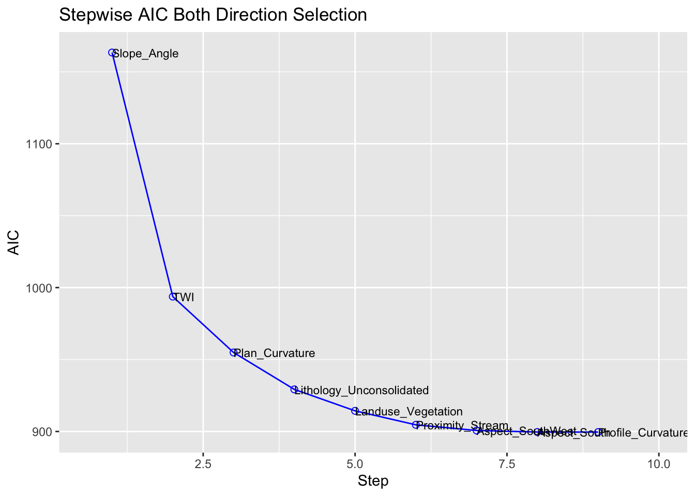
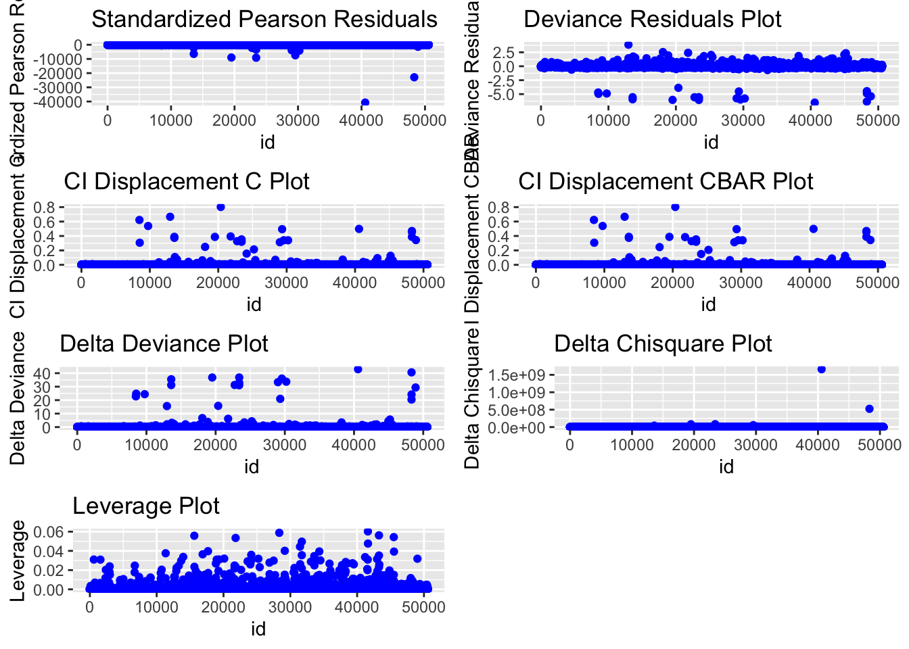
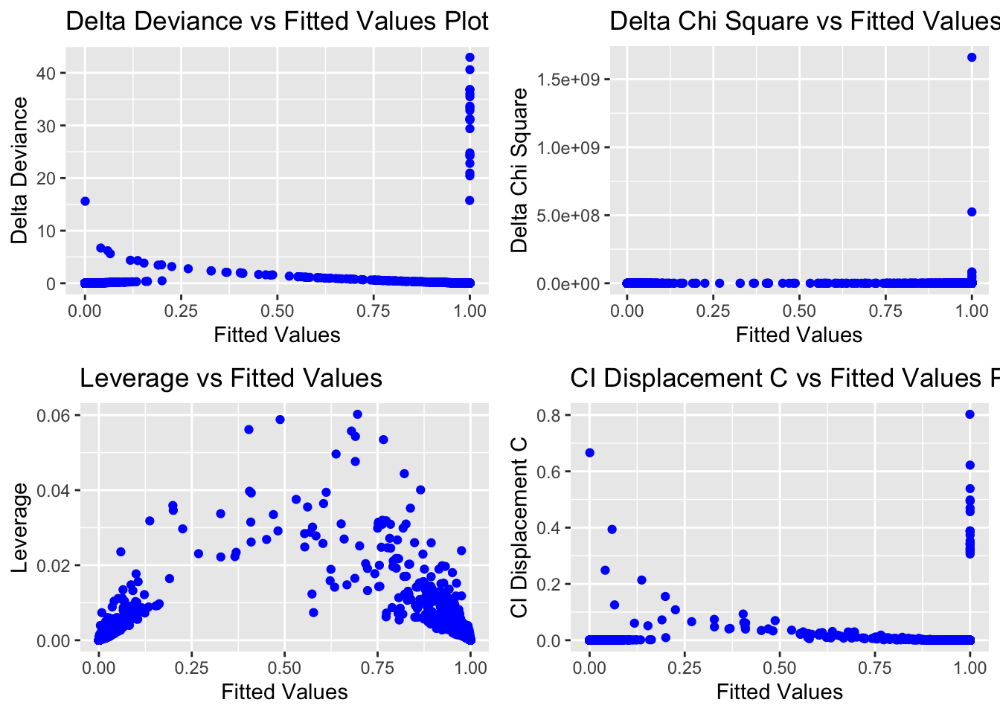

pacman::p_load(sf, st, spdep, raster, spatstat, tmap, devtools,vtable,ggplot2,egg, corrplot, patchwork, ggstats, ggstatsplot, GWmodel, tidyverse, gtsummary,vtable, sjPlot, sjmisc, sjlabelled, tableHTML, olsrr, car, blorr,ISLR)Landslide Susceptibility Model Development
R
sf
gwmodel
To develop a landslide susceptibility methodology framework, we will explore and calibrate different statistical and machine learning models.
1.0 Import Packages
car: Companion to Applied Regression
2.0 Import Data
train_grids <- read.csv("~/IS485-Landslide/data/aspatial/train_grid.csv")
train_grids_v2 <- read.csv("~/IS485-Landslide/data/aspatial/train_grid_v2.csv")
train_grids_v3 <- read.csv("~/IS485-Landslide/data/aspatial/train_grid_v3.csv")length <- length(train_grids)
length[1] 31train_grids.sf <- st_as_sf(train_grids,
coords = c("X", "Y"))
train_grid_v2.sf <- st_as_sf(train_grids_v2,
coords = c("X", "Y"))5.0 Exploratory Spatial Data Analysis (ESDA) - V3
To calculate the summary statistics of landslide_train data frame, we use st().
st(train_grids_v3)| Variable | N | Mean | Std. Dev. | Min | Pctl. 25 | Pctl. 75 | Max |
|---|---|---|---|---|---|---|---|
| Train_ID | 50563 | 25282 | 14596 | 1 | 12642 | 37922 | 50563 |
| Grid_ID | 50563 | 7258576 | 4280699 | 154 | 3455206 | 11141722 | 14724829 |
| X | 50563 | 573312 | 27325 | 519097 | 550687 | 594547 | 624487 |
| Y | 50563 | 5129116 | 17040 | 5095541 | 5115266 | 5143076 | 5164991 |
| Landslide | 50563 | 0.83 | 0.38 | 0 | 1 | 1 | 1 |
| Elevation | 50563 | 1913 | 677 | 0 | 1509 | 2420 | 3924 |
| Slope_Angle | 50563 | 42 | 24 | 0 | 27 | 48 | 90 |
| Aspect_North | 50563 | 0.061 | 0.24 | 0 | 0 | 0 | 1 |
| Aspect_NorthEast | 50563 | 0.12 | 0.32 | 0 | 0 | 0 | 1 |
| Aspect_East | 50563 | 0.14 | 0.34 | 0 | 0 | 0 | 1 |
| Aspect_SouthEast | 50563 | 0.15 | 0.35 | 0 | 0 | 0 | 1 |
| Aspect_South | 50563 | 0.16 | 0.36 | 0 | 0 | 0 | 1 |
| Aspect_SouthWest | 50563 | 0.15 | 0.36 | 0 | 0 | 0 | 1 |
| Aspect_West | 50563 | 0.13 | 0.34 | 0 | 0 | 0 | 1 |
| Profile_Curvature | 50563 | -0.00043 | 0.0012 | -0.0066 | -0.0011 | 0.00022 | 0.0079 |
| Plan_Curvature | 50563 | -0.00019 | 0.0011 | -0.0056 | -0.00071 | 0.00032 | 0.0068 |
| Lithology_Metamorphic | 50563 | 0.42 | 0.49 | 0 | 0 | 1 | 1 |
| Lithology_Sedimentary | 50563 | 0.24 | 0.42 | 0 | 0 | 0 | 1 |
| Lithology_Plutonic | 50563 | 0.057 | 0.23 | 0 | 0 | 0 | 1 |
| Lithology_Unconsolidated | 50563 | 0.29 | 0.45 | 0 | 0 | 1 | 1 |
| Proximity_Settlement | 50563 | 904 | 764 | 0 | 328 | 1288 | 5600 |
| Proximity_Stream | 50563 | 12 | 12 | 0 | 3.1 | 17 | 97 |
| Proximity_Road | 50563 | 26 | 22 | 0 | 6.3 | 40 | 125 |
| Proximity_Fault | 50563 | 828 | 1032 | 0 | 199 | 1012 | 7746 |
| Landuse_Vegetation | 50563 | 0.51 | 0.5 | 0 | 0 | 1 | 1 |
| Precipitation | 50563 | 0.15 | 0.048 | 0 | 0.13 | 0.17 | 0.29 |
| TWI | 50563 | 7.5 | 2.3 | 3.7 | 6 | 8.3 | 23 |
| SPI | 50563 | 0.0065 | 0.029 | 0 | 0.00024 | 0.0032 | 1.4 |
| STI | 50563 | 7.7 | 27 | 0 | 0 | 5.8 | 877 |
Next, we will create atrellis plot by using ggarrange() of ggpubr package. In this way, we can see the distribution plots of different parameters at the same time.
Elevation <- ggplot(data=train_grids_v3, aes(x= `Elevation`)) +
geom_histogram(bins=7, color="black", fill="#e9531e")
Slope_Angle <- ggplot(data=train_grids_v3, aes(x= `Slope_Angle`)) +
geom_histogram(bins=7, color="black", fill="#e9531e")
Profile_Curvature <- ggplot(data=train_grids_v3, aes(x= `Profile_Curvature`)) +
geom_histogram(bins=7, color="black", fill="#e9531e")
Plan_Curvature <- ggplot(data=train_grids_v3, aes(x= `Plan_Curvature`)) +
geom_histogram(bins=7, color="black", fill="#DC375E")
Proximity_Settlement <- ggplot(data=train_grids_v3,
aes(x= `Proximity_Settlement`)) +
geom_histogram(bins=7, color="black", fill="#DC375E")
Proximity_Stream <- ggplot(data=train_grids_v3, aes(x= `Proximity_Stream`)) +
geom_histogram(bins=7, color="black", fill="#DC375E")
Proximity_Road <- ggplot(data=train_grids_v3, aes(x= `Proximity_Road`)) +
geom_histogram(bins=7, color="black", fill="#c4102c")
Proximity_Fault <- ggplot(data=train_grids_v3, aes(x= `Proximity_Fault`)) +
geom_histogram(bins=7, color="black", fill="#c4102c")
Precipitation <- ggplot(data=train_grids_v3, aes(x= `Precipitation`)) +
geom_histogram(bins=7, color="black", fill="#c4102c")
TWI <- ggplot(data=train_grids_v3, aes(x= `TWI`)) +
geom_histogram(bins=7, color="black", fill="#AE4285")
SPI <- ggplot(data=train_grids_v3, aes(x= `SPI`)) +
geom_histogram(bins=7, color="black", fill="#AE4285")
STI <- ggplot(data=train_grids_v3, aes(x= `STI`)) +
geom_histogram(bins=7, color="black", fill="#AE4285")
ggarrange(Elevation,Slope_Angle,Profile_Curvature,Plan_Curvature,Proximity_Settlement,Proximity_Stream,Proximity_Road,Proximity_Fault,Precipitation,TWI,SPI,STI,
ncol = 4, nrow = 4)adding dummy grobs
4.1 Correlation Matrix Using Corrplot
Before building a logistic regression model, it is important to ensure that the indepdent variables used are not highly correlated to each other. If these highly correlated independent variables are used in building a regression model by mistake, the quality of the model will be compromised. This phenomenon is known as multicollinearity in statistics.
Correlation matrix is commonly used to visualise the relationships between the independent variables. In this section, the corrplot package will be used to display the correlation matrix of the independent variables in condo_resale data frame.
corrplot(cor(train_grids_v3[, 6:29]), diag = FALSE, order = "AOE",
col=colorRampPalette(c("#50a8b4","#e4c838","#be804f"))(10),
tl.pos = "td", tl.cex = 0.5,tl.col = "black", number.cex = 0.5, method = "number", type = "upper")
corrplot(cor(train_grids_v3[,6:29]), diag = FALSE, order = "AOE",
col=colorRampPalette(c("#50a8b4","#ffffdd","#be804f"))(10),
tl.pos = "td", tl.cex = 0.5,tl.col = "black", number.cex = 0.5, method = "ellipse", type = "upper")
Matrix reorder is very important for mining the hiden structure and patter in the matrix. There are four methods in corrplot (parameter order), named “AOE”, “FPC”, “hclust”, “alphabet”. In the code chunk above, AOE order is used. It orders the variables by using the angular order of the eigenvectors method suggested by Michael Friendly.
4.2 Correlation Matrix Using ggstats
set.seed(123)
## producing the correlation matrix
ggcorrmat(
data = train_grids_v3[, 6:29],
matrix.type = "upper",
type = "parametric",
tr = 0.2,
partial = FALSE,
k = 2L,
sig.level = 0.05,
conf.level = 0.95,
bf.prior = 0.707,
ggcorrplot.args = list(
tl.cex = 10,
pch.cex = 5,
lab_size = 3
)) + ## modification outside `{ggstatsplot}` using `{ggplot2}` functions
ggplot2::theme(
axis.text.x = ggplot2::element_text(
margin = ggplot2::margin(t = 0.15, r = 0.15, b = 0.15, l = 0.15, unit = "cm")
)
)
4.3 Multiple Logistic Regression
We will fit a logistic regression model in order to predict the probability of a customer defaulting based on the average balance carried by the customer. The glm function fits generalized linear models, a class of models that includes logistic regression. The syntax of the glm function is similar to that of lm, except that we must pass the argument family = binomial in order to tell R to run a logistic regression rather than some other type of generalized linear model.
landslide.lr_3 <- glm(Landslide ~ Elevation + Slope_Angle + Aspect_North + Aspect_NorthEast + Aspect_East+Aspect_SouthEast+Aspect_South + Aspect_SouthWest +Aspect_West + Profile_Curvature +Plan_Curvature + Lithology_Metamorphic+Lithology_Sedimentary + Lithology_Plutonic+Lithology_Unconsolidated + Proximity_Settlement+Proximity_Stream+Proximity_Road+Proximity_Fault+Landuse_Vegetation+Precipitation+TWI+SPI+STI, family = "binomial", data = train_grids_v3)summary(landslide.lr_3)
Call:
glm(formula = Landslide ~ Elevation + Slope_Angle + Aspect_North +
Aspect_NorthEast + Aspect_East + Aspect_SouthEast + Aspect_South +
Aspect_SouthWest + Aspect_West + Profile_Curvature + Plan_Curvature +
Lithology_Metamorphic + Lithology_Sedimentary + Lithology_Plutonic +
Lithology_Unconsolidated + Proximity_Settlement + Proximity_Stream +
Proximity_Road + Proximity_Fault + Landuse_Vegetation + Precipitation +
TWI + SPI + STI, family = "binomial", data = train_grids_v3)
Coefficients:
Estimate Std. Error z value Pr(>|z|)
(Intercept) 2.742e+01 1.287e+00 21.311 < 2e-16 ***
Elevation -2.790e-04 2.260e-04 -1.235 0.216903
Slope_Angle -2.943e-01 8.417e-03 -34.967 < 2e-16 ***
Aspect_North 9.310e-01 5.833e-01 1.596 0.110443
Aspect_NorthEast 4.991e-01 5.049e-01 0.989 0.322849
Aspect_East 8.042e-01 4.907e-01 1.639 0.101228
Aspect_SouthEast 6.633e-01 4.836e-01 1.371 0.170229
Aspect_South 1.133e+00 4.740e-01 2.389 0.016872 *
Aspect_SouthWest 2.353e-02 5.019e-01 0.047 0.962600
Aspect_West 1.023e+00 5.048e-01 2.027 0.042683 *
Profile_Curvature -1.022e+02 8.413e+01 -1.214 0.224662
Plan_Curvature -6.170e+02 9.548e+01 -6.462 1.03e-10 ***
Lithology_Metamorphic 3.287e-01 4.418e-01 0.744 0.456858
Lithology_Sedimentary 1.381e-01 4.839e-01 0.285 0.775387
Lithology_Plutonic 6.781e-01 4.132e-01 1.641 0.100753
Lithology_Unconsolidated -1.412e+00 5.157e-01 -2.737 0.006194 **
Proximity_Settlement 1.561e-04 1.828e-04 0.854 0.393366
Proximity_Stream -3.647e-02 1.180e-02 -3.091 0.001994 **
Proximity_Road 5.099e-03 6.055e-03 0.842 0.399670
Proximity_Fault -1.519e-05 8.242e-05 -0.184 0.853831
Landuse_Vegetation 8.977e-01 2.692e-01 3.335 0.000854 ***
Precipitation -8.802e-01 2.736e+00 -0.322 0.747675
TWI -8.725e-01 6.487e-02 -13.451 < 2e-16 ***
SPI 1.466e+00 4.865e+00 0.301 0.763222
STI -3.016e-03 5.501e-03 -0.548 0.583526
---
Signif. codes: 0 '***' 0.001 '**' 0.01 '*' 0.05 '.' 0.1 ' ' 1
(Dispersion parameter for binomial family taken to be 1)
Null deviance: 46691.00 on 50562 degrees of freedom
Residual deviance: 869.16 on 50538 degrees of freedom
AIC: 919.16
Number of Fisher Scoring iterations: 11tbl_regression(landslide.lr_3, intercept = TRUE) %>%
add_glance_source_note(
include = c(r.squared, adj.r.squared,
AIC, statistic,
p.value, sigma))4.5 Calculating Adjusted Odd Ratios and Confidence Intervals
OR.CI_3 <- cbind("AOR" = exp(coef(landslide.lr_3)),
exp(confint(landslide.lr_3)))[-1,]Waiting for profiling to be done...round(OR.CI_3, 4) AOR 2.5 % 97.5 %
Elevation 0.9997 0.9993 1.000200e+00
Slope_Angle 0.7450 0.7322 7.568000e-01
Aspect_North 2.5370 0.7986 7.813800e+00
Aspect_NorthEast 1.6473 0.6148 4.418800e+00
Aspect_East 2.2349 0.8607 5.847500e+00
Aspect_SouthEast 1.9412 0.7574 5.003300e+00
Aspect_South 3.1041 1.2382 7.869400e+00
Aspect_SouthWest 1.0238 0.3834 2.724500e+00
Aspect_West 2.7816 1.0411 7.479200e+00
Profile_Curvature 0.0000 0.0000 2.918329e+26
Plan_Curvature 0.0000 0.0000 0.000000e+00
Lithology_Metamorphic 1.3892 0.6031 3.393100e+00
Lithology_Sedimentary 1.1481 0.4520 3.007200e+00
Lithology_Plutonic 1.9702 0.8582 4.314000e+00
Lithology_Unconsolidated 0.2438 0.0895 6.744000e-01
Proximity_Settlement 1.0002 0.9998 1.000500e+00
Proximity_Stream 0.9642 0.9423 9.866000e-01
Proximity_Road 1.0051 0.9933 1.017100e+00
Proximity_Fault 1.0000 0.9998 1.000100e+00
Landuse_Vegetation 2.4540 1.4493 4.169500e+00
Precipitation 0.4147 0.0021 9.279110e+01
TWI 0.4179 0.3678 4.744000e-01
SPI 4.3306 0.0007 4.114150e+03
STI 0.9970 0.9893 1.005500e+00OR.CI_3 AOR 2.5 % 97.5 %
Elevation 9.997210e-01 9.992857e-01 1.000170e+00
Slope_Angle 7.450388e-01 7.322181e-01 7.568287e-01
Aspect_North 2.537015e+00 7.986100e-01 7.813798e+00
Aspect_NorthEast 1.647271e+00 6.148304e-01 4.418762e+00
Aspect_East 2.234933e+00 8.606986e-01 5.847543e+00
Aspect_SouthEast 1.941191e+00 7.573923e-01 5.003259e+00
Aspect_South 3.104102e+00 1.238176e+00 7.869398e+00
Aspect_SouthWest 1.023811e+00 3.834230e-01 2.724530e+00
Aspect_West 2.781647e+00 1.041117e+00 7.479208e+00
Profile_Curvature 4.323315e-45 2.160042e-117 2.918329e+26
Plan_Curvature 1.099048e-268 0.000000e+00 1.617110e-187
Lithology_Metamorphic 1.389228e+00 6.030694e-01 3.393148e+00
Lithology_Sedimentary 1.148073e+00 4.520431e-01 3.007216e+00
Lithology_Plutonic 1.970229e+00 8.582418e-01 4.313964e+00
Lithology_Unconsolidated 2.437549e-01 8.953271e-02 6.744185e-01
Proximity_Settlement 1.000156e+00 9.997935e-01 1.000509e+00
Proximity_Stream 9.641891e-01 9.423308e-01 9.865879e-01
Proximity_Road 1.005112e+00 9.932978e-01 1.017140e+00
Proximity_Fault 9.999848e-01 9.998231e-01 1.000146e+00
Landuse_Vegetation 2.454012e+00 1.449329e+00 4.169543e+00
Precipitation 4.147188e-01 2.109291e-03 9.279110e+01
TWI 4.179012e-01 3.677767e-01 4.743613e-01
SPI 4.330645e+00 7.353506e-04 4.114150e+03
STI 9.969885e-01 9.892623e-01 1.005487e+00vif(landslide.lr_3) Elevation Slope_Angle Aspect_North
2.488940 1.596051 1.837785
Aspect_NorthEast Aspect_East Aspect_SouthEast
2.420200 2.739139 2.914264
Aspect_South Aspect_SouthWest Aspect_West
3.200430 2.497585 2.478521
Profile_Curvature Plan_Curvature Lithology_Metamorphic
1.316536 1.624930 4.437094
Lithology_Sedimentary Lithology_Plutonic Lithology_Unconsolidated
3.238282 1.909478 3.086449
Proximity_Settlement Proximity_Stream Proximity_Road
1.733509 1.357373 1.871975
Proximity_Fault Landuse_Vegetation Precipitation
1.279720 1.580992 1.242173
TWI SPI STI
2.548388 1.182007 1.178955 Stepwise Selection
For the initial/ first cut model, all the independent variables are put into the model. Our goal is to include a limited number of independent variables (5-15) which are all significant, without sacrificing too much on the model performance. The rationale behind not-including too many variables is that the model would be over fitted and would become unstable when tested on the validation sample. The variable reduction is done using forward or backward or stepwise variable selection procedures. We will use blr_step_aic_both() to shortlist predictors for our model.
blr_step_aic_both(landslide.lr_3)Stepwise Selection Method
-------------------------
Candidate Terms:
1 . Elevation
2 . Slope_Angle
3 . Aspect_North
4 . Aspect_NorthEast
5 . Aspect_East
6 . Aspect_SouthEast
7 . Aspect_South
8 . Aspect_SouthWest
9 . Aspect_West
10 . Profile_Curvature
11 . Plan_Curvature
12 . Lithology_Metamorphic
13 . Lithology_Sedimentary
14 . Lithology_Plutonic
15 . Lithology_Unconsolidated
16 . Proximity_Settlement
17 . Proximity_Stream
18 . Proximity_Road
19 . Proximity_Fault
20 . Landuse_Vegetation
21 . Precipitation
22 . TWI
23 . SPI
24 . STI
Variables Entered/Removed:
- Slope_Angle added
- TWI added
- Plan_Curvature added
- Lithology_Unconsolidated added
- Landuse_Vegetation added
- Proximity_Stream added
- Aspect_SouthWest added
- Aspect_South added
- Profile_Curvature added
No more variables to be added or removed.
Stepwise Summary
------------------------------------------------------------------------
Variable Method AIC BIC Deviance
------------------------------------------------------------------------
Slope_Angle addition 1163.417 1181.079 1159.417
TWI addition 993.737 1020.230 987.737
Plan_Curvature addition 954.912 990.236 946.912
Lithology_Unconsolidated addition 929.252 973.407 919.252
Landuse_Vegetation addition 914.344 967.330 902.344
Proximity_Stream addition 904.631 966.447 890.631
Aspect_SouthWest addition 900.692 971.339 884.692
Aspect_South addition 899.631 979.110 881.631
Profile_Curvature addition 899.595 987.905 879.595
------------------------------------------------------------------------landslide.lr_3 %>%
blr_step_aic_both() %>%
plot()Stepwise Selection Method
-------------------------
Candidate Terms:
1 . Elevation
2 . Slope_Angle
3 . Aspect_North
4 . Aspect_NorthEast
5 . Aspect_East
6 . Aspect_SouthEast
7 . Aspect_South
8 . Aspect_SouthWest
9 . Aspect_West
10 . Profile_Curvature
11 . Plan_Curvature
12 . Lithology_Metamorphic
13 . Lithology_Sedimentary
14 . Lithology_Plutonic
15 . Lithology_Unconsolidated
16 . Proximity_Settlement
17 . Proximity_Stream
18 . Proximity_Road
19 . Proximity_Fault
20 . Landuse_Vegetation
21 . Precipitation
22 . TWI
23 . SPI
24 . STI
Variables Entered/Removed:
- Slope_Angle added
- TWI added
- Plan_Curvature added
- Lithology_Unconsolidated added
- Landuse_Vegetation added
- Proximity_Stream added
- Aspect_SouthWest added
- Aspect_South added
- Profile_Curvature added
No more variables to be added or removed.
Model Update
landslide.lr_3_modified <- glm(Landslide ~ Slope_Angle + Aspect_SouthWest + Aspect_South + Profile_Curvature +Plan_Curvature +Lithology_Unconsolidated+Proximity_Stream+Landuse_Vegetation+TWI, family = "binomial", data = train_grids_v3)summary(landslide.lr_3_modified)
Call:
glm(formula = Landslide ~ Slope_Angle + Aspect_SouthWest + Aspect_South +
Profile_Curvature + Plan_Curvature + Lithology_Unconsolidated +
Proximity_Stream + Landuse_Vegetation + TWI, family = "binomial",
data = train_grids_v3)
Coefficients:
Estimate Std. Error z value Pr(>|z|)
(Intercept) 2.802e+01 9.666e-01 28.991 < 2e-16 ***
Slope_Angle -2.953e-01 8.333e-03 -35.439 < 2e-16 ***
Aspect_SouthWest -6.802e-01 3.319e-01 -2.049 0.040439 *
Aspect_South 4.592e-01 2.708e-01 1.696 0.089897 .
Profile_Curvature -1.153e+02 8.129e+01 -1.418 0.156064
Plan_Curvature -6.202e+02 9.337e+01 -6.642 3.09e-11 ***
Lithology_Unconsolidated -1.762e+00 3.284e-01 -5.365 8.09e-08 ***
Proximity_Stream -3.523e-02 1.114e-02 -3.163 0.001563 **
Landuse_Vegetation 8.896e-01 2.298e-01 3.871 0.000108 ***
TWI -8.614e-01 6.303e-02 -13.667 < 2e-16 ***
---
Signif. codes: 0 '***' 0.001 '**' 0.01 '*' 0.05 '.' 0.1 ' ' 1
(Dispersion parameter for binomial family taken to be 1)
Null deviance: 46691.0 on 50562 degrees of freedom
Residual deviance: 879.6 on 50553 degrees of freedom
AIC: 899.6
Number of Fisher Scoring iterations: 11vif(landslide.lr_3_modified) Slope_Angle Aspect_SouthWest Aspect_South
1.531766 1.083775 1.058868
Profile_Curvature Plan_Curvature Lithology_Unconsolidated
1.245610 1.593947 1.216448
Proximity_Stream Landuse_Vegetation TWI
1.192125 1.171335 2.379612 Model Fit Statistics
Model fit statistics are available to assess how well the model fits the data and to compare two different models.The output includes likelihood ratio test, AIC, BIC and a host of pseudo r-squared measures. You can read more about pseudo r-squared at https://stats.idre.ucla.edu/other/mult-pkg/faq/general/faq-what-are-pseudo-r-squareds/.
blr_model_fit_stats(landslide.lr_3_modified) Model Fit Statistics
------------------------------------------------------------------------------------
Log-Lik Intercept Only: -23345.502 Log-Lik Full Model: -439.798
Deviance(50553): 879.595 LR(9): 45811.409
Prob > LR: 0.000
MCFadden's R2 0.981 McFadden's Adj R2: 0.981
ML (Cox-Snell) R2: 0.596 Cragg-Uhler(Nagelkerke) R2: 0.988
McKelvey & Zavoina's R2: 0.949 Efron's R2: 0.994
Count R2: 0.999 Adj Count R2: 0.995
BIC: 987.905 AIC: 899.595
------------------------------------------------------------------------------------Compared with the basic model,
blr_model_fit_stats(landslide.lr_3) Model Fit Statistics
-----------------------------------------------------------------------------------
Log-Lik Intercept Only: -23345.502 Log-Lik Full Model: -434.578
Deviance(50538): 869.155 LR(24): 45821.850
Prob > LR: 0.000
MCFadden's R2 0.981 McFadden's Adj R2: 0.980
ML (Cox-Snell) R2: 0.596 Cragg-Uhler(Nagelkerke) R2: 0.989
McKelvey & Zavoina's R2: 0.948 Efron's R2: 0.994
Count R2: 0.999 Adj Count R2: 0.995
BIC: 1139.929 AIC: 919.155
-----------------------------------------------------------------------------------Model Validation
blr_confusion_matrix(landslide.lr_3_modified, cutoff = 0.5)Confusion Matrix and Statistics
Reference
Prediction 0 1
0 8763 24
1 20 41756
Accuracy : 0.9991
No Information Rate : 0.1737
Kappa : 0.9970
McNemars's Test P-Value : 0.6511
Sensitivity : 0.9994
Specificity : 0.9977
Pos Pred Value : 0.9995
Neg Pred Value : 0.9973
Prevalence : 0.8263
Detection Rate : 0.8258
Detection Prevalence : 0.8262
Balanced Accuracy : 0.9986
Precision : 0.9995
Recall : 0.9994
'Positive' Class : 1blr_confusion_matrix(landslide.lr_3, cutoff = 0.5)Confusion Matrix and Statistics
Reference
Prediction 0 1
0 8763 23
1 20 41757
Accuracy : 0.9991
No Information Rate : 0.1737
Kappa : 0.9970
McNemars's Test P-Value : 0.7604
Sensitivity : 0.9994
Specificity : 0.9977
Pos Pred Value : 0.9995
Neg Pred Value : 0.9974
Prevalence : 0.8263
Detection Rate : 0.8258
Detection Prevalence : 0.8262
Balanced Accuracy : 0.9986
Precision : 0.9995
Recall : 0.9994
'Positive' Class : 1Hosmer Lemeshow Test
Hosmer and Lemeshow developed a goodness-of-fit test for logistic regression models with binary responses. The test involves dividing the data into approximately ten groups of roughly equal size based on the percentiles of the estimated probabilities. The observations are sorted in increasing order of their estimated probability of having an even outcome. The discrepancies between the observed and expected number of observations in these groups are summarized by the Pearson chi-square statistic, which is then compared to chi-square distribution with t degrees of freedom, where t is the number of groups minus 2. Lower values of Goodness-of-fit are preferred.
blr_test_hosmer_lemeshow(landslide.lr_3_modified) Partition for the Hosmer & Lemeshow Test
--------------------------------------------------------------
def = 1 def = 0
Group Total Observed Expected Observed Expected
--------------------------------------------------------------
1 5057 1 3.16 5056 5053.84
2 5056 1349 1330.49 3707 3725.51
3 5056 5055 5052.84 1 3.16
4 5056 5054 5055.67 2 0.33
5 5057 5056 5056.90 1 0.10
6 5056 5054 5055.96 2 0.04
7 5056 5055 5055.98 1 0.02
8 5056 5056 5055.99 0 0.01
9 5056 5054 5056.00 2 0.00
10 5057 5046 5057.00 11 0.00
--------------------------------------------------------------
Goodness of Fit Test
-------------------------------
Chi-Square DF Pr > ChiSq
-------------------------------
301869.9998 8 0.0000
-------------------------------ROC Curve
ROC curve is a graphical representation of the validity of cut-offs for a logistic regression model. The ROC curve is plotted using the sensitivity and specificity for all possible cut-offs, i.e., all the probability scores. The graph is plotted using sensitivity on the y-axis and 1-specificity on the x-axis. Any point on the ROC curve represents a sensitivity X (1-specificity) measure corresponding to a cut-off. The area under the ROC curve is used as a validation measure for the model – the bigger the area the better is the model.
landslide.lr_3_modified%>%
blr_gains_table() %>%
blr_roc_curve()Influence Diagnostics
blr_plot_diag_influence(landslide.lr_3_modified)
Fitted Values Diagnostics
blr_plot_diag_fit(landslide.lr_3_modified)